| LTE Advanced | ||||||||||||||||||||||||||||||||||||||||||||||||||||||||||||||||||||||||||
|
This is the document at the very early stage and will keep being updated as I get more detailed picture of LTE advanced. For now, please parden me with posting vague, poorly connected/organized contents. This is purely a skeleton which should be covered with flash and blood. I will keep putting more details and trying to connect dots in more organized way.
As I explained in From R99 to LTE page, any kind of evolution of communication is based on a set of common technical motivation as follows.
Followings are the topics I will cover in this page.
Initial Motivation for LTE Advanced
You may be hearing more and more about LTE Advanced these days (approaching the end of 2012) and you may think "Do we really need such a huge bandwidth ? Is the current LTE BW not enough ? Do we have all the technologies mature enough for LTE Advanced Implementation ?"
To see the mature implementation of LTE advanced network or mobile phone, you should get firm "YES" to following quesitons first.
As of the end of 2012, I don't think I have firm "YES" to any of these questions. But I am hearing that a couple of LTE network operators will deploy LTE Advanced feature in very near future and some operators has already supported the feature. I think this is true, but the LTE advanced they talk about at this point is not the full fledged technology and it is mainly about Carrier Aggregation. Does this mean that they already feel the current 20 Mhz LTE bandwidth is not enough ? As far as I know, it is not because of this. Even though the current LTE supports 20 Mhz BW in max, there are only a few network operators who is certified for such a wide bandwidth. The most common bandwidth that network operators has for LTE is 10 Mhz, which means they are not fully utilizing the LTE capability in terms of bandwidth. This is not because of technical restriction, it is purely because of licensing issues for the allocated bandwidth. Even though there is not many Network Operators who has 20 Mhz BW, there are some network operators who has license multiple band (e.g, two separated 10 Mhz BW and two or more 5 Mhz BW). These network operators wants to combine those multiple bands to achieve wide BW (in most case 20 Mhz BW) LTE. It is the initial motivation for LTE Advanced for now and I don't think we will see the fully grown LTE advanced technology in any time soon. We still have a lot of things to be done even for the initial LTE (Release 8 LTE) and this maturing process would take a couple of more years. LTE Advanced will be introduced gradually in parallele to Release 8 LTE, but initial introduction of LTE advanced would be more about "Marketing motivation" rather than "Technical motivation".
You may heard from other sources or will see in this page a lot of fancy stories about LTE advanced (like the aggregation of 5 carriers with 20 Mhz BW each, 8 x 8 DL MIMO, 4 x 4 UL MIMO, 1G Data Rate etc). But as I mentioned above, the reality would not be as fancy as you may expect. As of Jan, 2013. The only type of deployment I am hearing that some network operators would deploy is as follows : i) 2 DL Carriers (mostly 10 Mhz BW each, Inter band) ii) NO UL Subcarriers
Following illustration shows some of possible carrier allocations for initial deployment. 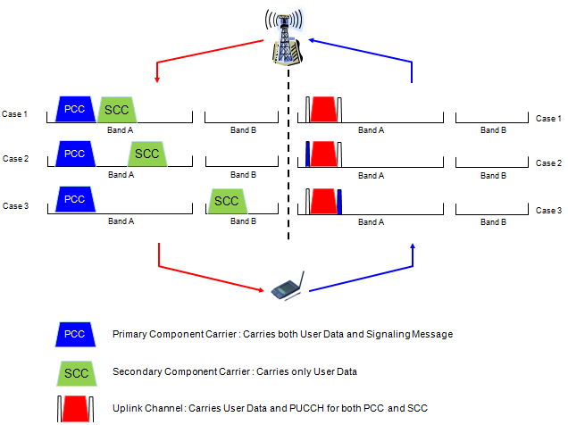 Even this simple configuration there are many things to consider and following is some of the list.
What kind of data you would carry on the primary and secondary DL carrier ? : Definately both channel can carry PDSCH. How about PDCCH ? Would both DL carry each of its own PDCCH seprately ? or Primary DL Carrier would carry PDCCH for both carrier and the secondary carrier carry only PDSCH ?. Both options are possible and it is upto network implementation.
How kind of data you would carry on UL carrier ? : You may think there would be no differences in UL carrier if UL does not support multi carrier as in the initial deployment, but it would not be true. There would be no differences in terms of PUSCH, but how about PUCCH? Since UE is getting PDSCHs from two separate carriers, there should be questions of how to send HARQ ACK/NACK for each of the PDSCH. Should UE send separate PUCCHs(HARQ ACK/NACK for each DL carriers) or single PUCCH carrying the HARQ ACK/NACK for both channels. Both options are possible in terms of Rel 9/Rel 10 specification, but it is higher possibility to use a single PUCCH for carrying HARQ ACK/NACK for both DL carriers. It means that we will have new PUCCH format for this situation.
How to handle PRACH ? : Since UE can have possibility of send Uplink to two different carrier and can receive the data from two separate carrier. Possible channels for PRACH procedure can be diverse as shown below.
But I guess the first option would be the best candidate since it is easy and is the same as Rel 8 method we are currently using.
How to handle handover with dual carrier ? : For this, we may also have easy option or tricky option. Tricky option would be to handover the two carrier without any modification from one cell (source cell) to another (destination cell). but this will cause a lot of issues if it is not very carefully implemented. Easy option would be to remove the secondary DL channel before handover and then perform handover and configure the secondary channel in the destination cell. Of course, it is highly probable to take an easy option for initial deployment.
Followings are some key words you would see from almost any LTE advanced material. Try to get familiar with these words at least from 10000 feet view. (I would put some details of each of these keywords over the next few weeks).
If I classify the keywords listed above into LTE architecture, it would be as follows.
Overview of Carrier Allocation and Network Architecture
One of the most important/critical feature in LTE Advanced is that we use multiple carriers in downlink and possible in uplink as well. It may sound simple to use multiple carriers, but in reality, with the introduction of multiple carrier all the possible carrier/resource allocation in uplink and downlink has such a huge combinations as shown below. This is not just a graphicaly complication -:). Just by looking at this illustration, a lot of questions would be boggling in your mind. How to allocated resources (number of RBs) in control channel ? Do we have to have separate HARQ process for each carrier ? or single-aggregated HARQ for the multiple carrier ? What about Uplink side ? How can I schedule the resource for Multiple SC-FDMA (Clustered SC-FDMA) ? etc... These are the topics I have to add later.. For now, just enjoy the illustration and use your imagination for all of these questions. Trying to get the solution based on your imagination would greatly help you to understand 3GPP specification. This is a kind of motivation step for the new study.
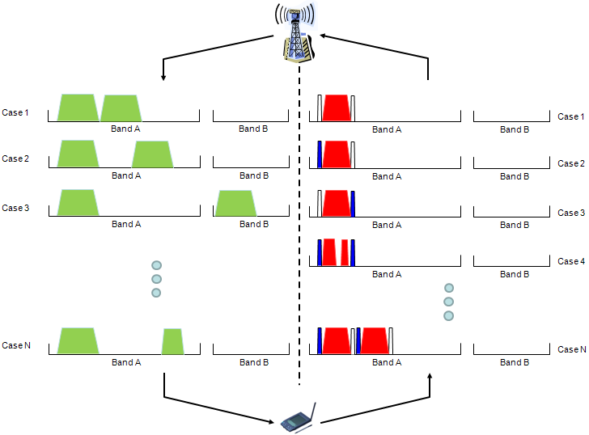
Another aspect of LTE Advanced is network architecture side. One of the key modification of LTE advanced is 'Relay Node' to improve data communication especially on cell boundary and increase cell coverage. Again, I just put the illustrations and I would like you to use your imagination to find the answers to the questions popping up in your mind. Do we need any RRC message or Information element to handle this Relay Node ? How a UE handle the situation as shown for UE C in the following illustration. This UE is getting the similar strength of signals both from eNodeB and Relay Node. Would it be possible to handover between two Relay Nodes ? Would the Relay Node have the same RF capability as eNB ? Would this Relay Node get involved in L1/PHY scheduling as well ? etc.
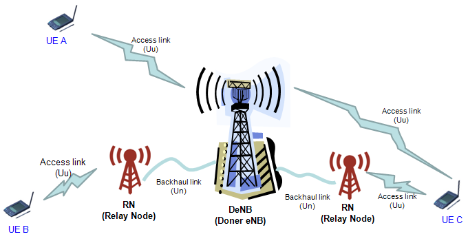
One of the biggest problem in LTE would be that the performance at cell edge would not be as good as those in CDMA/WCDMA. So understandably, one of the biggest feature of LTE advanced would be to come out with a wise compensation measure. On top of it, this compensation measure should be very economic. One of the most popular idea (or real implemetation) for this would be to add various relay node (RN). I found an excellent table from NTT DoCoMo technical report. I strongly recommend you to read the full document that I linked at the bottom of the following table.
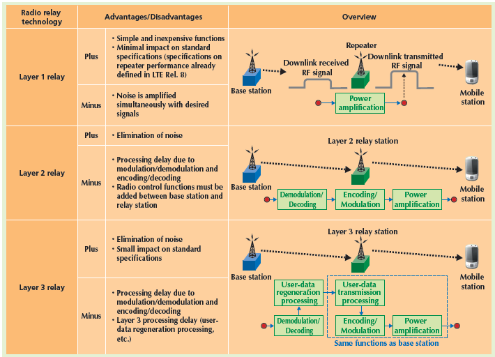 Source : DoCoMo Technology Report vol 12-2
Conceptually introducing this kind of Relay Node would give you a lot of gains in terms of throughput. Wouldn't there be any downside of this ?
I will leave all of these to you as your personal investigation items.
LTE Advanced Roadmap Check List
One of the most frequent question that I am getting lately about LTE advanced are "Does your equipment/chipset/network support LTE Advanced Rel 10 ?" But I don't think this is a valid/meaningful question for now ? (Probably this questions will be meaningful in around 2 years) since I haven't seen any equipment/chipset/network supporting the full Rel 10 features. So if you ask this question now (as of Mar, 2012), you may come across one of the following questions.
Case 1 : (The system/chipset/network supports (has implemented) around 10 percent of Rel 10 feature. ) But they say "Yes, we support Rel 10 feature".
Case 2 : (The system/chipset/network supports (has implemented) around 50 percent of Rel 10 feature. ) But they say "No, we do not support Rel 10 feature as of now".
Nobody tells a lie, but nobody tells the truth. My point is that single sentence question saying "Does your equipment/chipset/network support LTE Advanced Rel 10 ?" and the single setence answer "Yes, we do" or "No, we don't" does not make much sense now. If you chose an equipment/chipset/network based on this kind of single setense answer, you may get what is completed different from what you expected.
Then what would be the valid question and valid answer for NOW ? My recommendation is to make a list of questions and check the answer for each questions. The longer the list would be, the better matches between what you get and what you expect.
A kind of shortest list that I can think of would be as follows. This is a list purely based on the technology itself(3GPP). If you are talking to specific UE/equipment/chipset/network vendor, you should have the additional list of questions which is specific for the UE/equipment/chipset/network because there can be a lot of variations of implemtation or software/protocols stacks interfacing with your own product. Sometimes this additional list can be even longer than the 3GPP based check list and can be more important to you.
Again the following is a kind of minimal set of question purely based on my personal criteria. You may have your own revised or totally different set of list. The point now is "MAKE A LIST" -:)
The word "NOW" in the following list would mean about 3~6 month from now.
Personal Questions about LTE Advanced
Followings are my personal list of items to be investigated and updated as time allows.
Transmission Mode for LTE Advanced
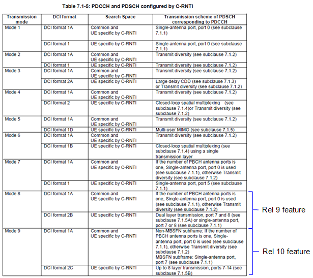
RRC Snapshots for LTE Advanced
Following is overall steps for LTE adavanced Carrier Aggregation and UE Capability Information and RRC Connection Reconfiguration is the critical steps for Carrier Aggregation configuration.
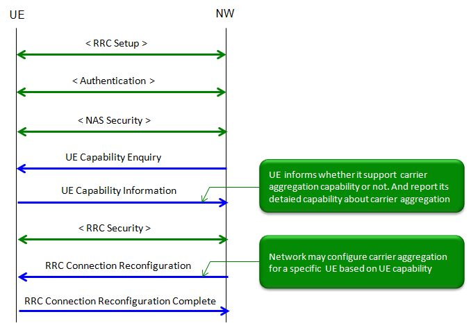
Followings is the information carried by UE Capability Information and its IEs for carrier aggregation and antenna configuration. (These are from 3GPP TS 36.331 version 10.4.0 Release 10)
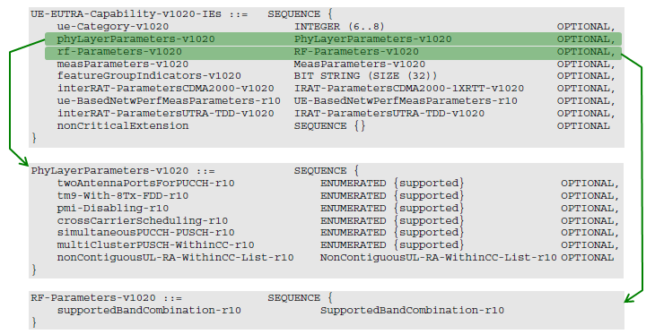
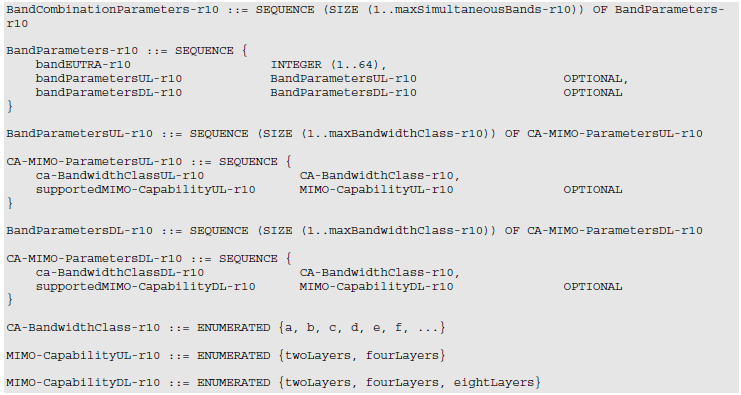
Following table is used to configure 'CA-BandwidthClass-r10' IE (This table is from 3GPP TS 36.101 version 10.8.0 Release 10)
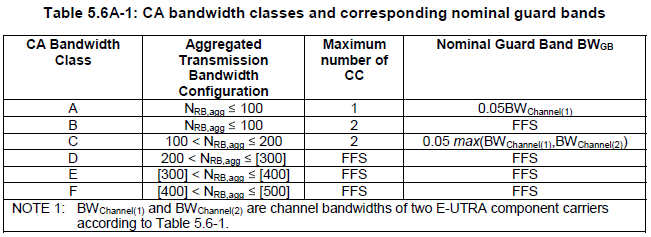
Followings is RRC Connection Reconfiguration message and its IEs for carrier aggregation and antenna configuration. (These are from 3GPP TS 36.331 version 10.4.0 Release 10)
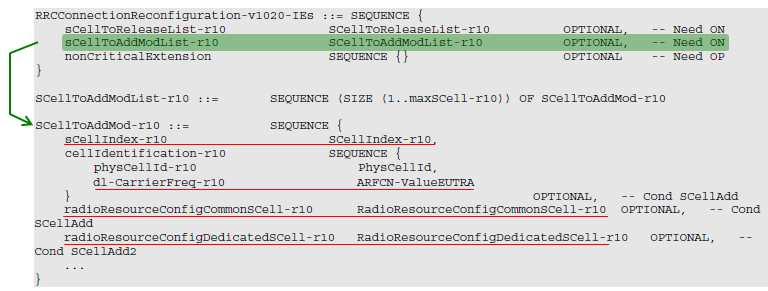
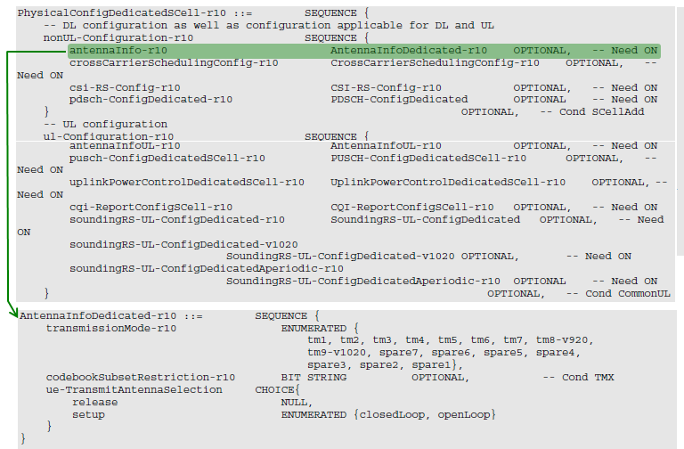
Technical Challenges of Implementing LTE Advanced
Followings are some technical challenges mainly for PHY/RF, but definitely there would be a lot of challenges in higher layer implmentation (eg, MAC for L1 scheduling)
|